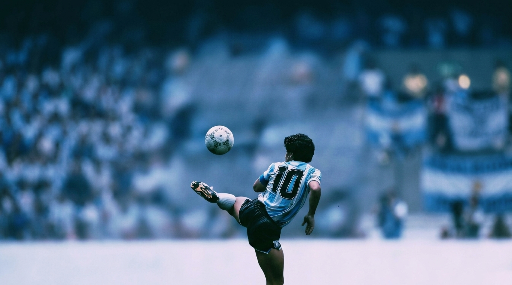
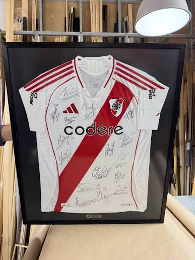
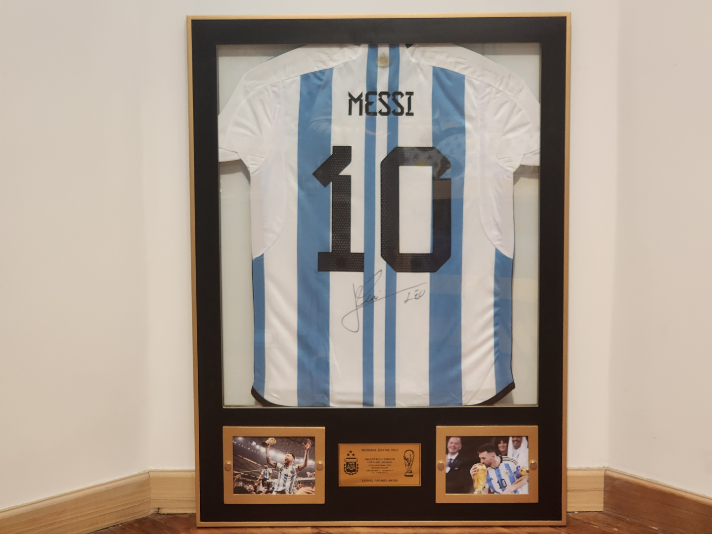
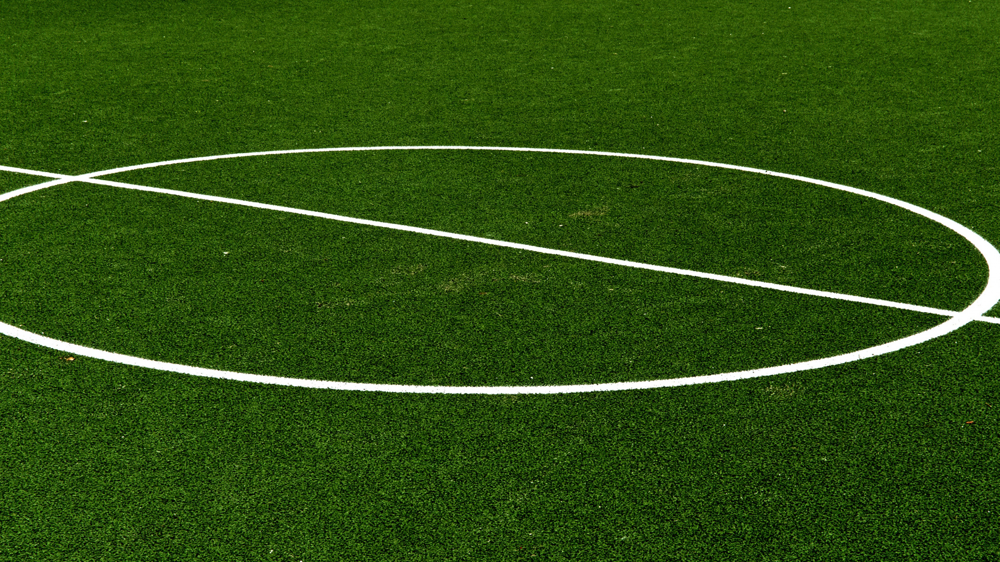
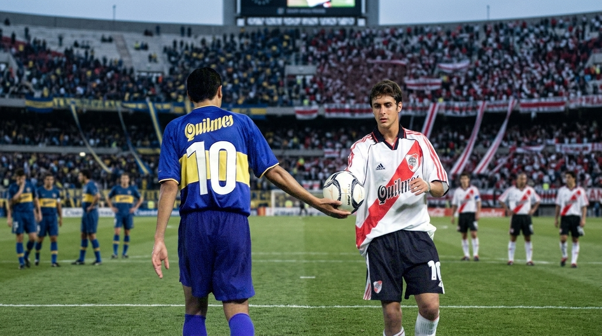

Cajas Profundas
Marcos estructurales diseñados con separación de vidrio para exhibir camisetas y reliquias con volumen sin dañar la tela.

Especialistas en el enmarcado artesanal de camisetas de colección, reliquias deportivas y momentos históricos listos para exhibir.
Entendemos la pasión por el fútbol. Tratamos cada camiseta y fotografía histórica con el cuidado de una pieza de museo y la precisión del diseño artesanal.
Marcos estructurales diseñados con separación de vidrio para exhibir camisetas y reliquias con volumen sin dañar la tela.
Materiales y cristales especiales que protegen las fibras y los colores de las camisetas históricas contra la decoloración.
Opción de incorporar detalles personalizados, escudos y placas grabadas con los datos del partido, fecha o jugador.
300+
Camisetas Enmarcadas
100%
Protección Textil
72hs
Asesoramiento Inicial
1°
Calidad de Galería
Aquí se mostrará la descripción detallada, materiales específicos y ejemplos del trabajo seleccionado.
¿Te gusta este formato?
Cotizar este estiloTrabajos Realizados
Cada camiseta cuenta una historia única. Las protegemos y lucimos con cristal de alta seguridad y diseño museológico.
Enmarcado profesional con fondo texturizado negro mate, doble passe-partout institucional y cristal anti-reflejo.
"Llevar la camiseta del Decano a este nivel de presentación superó lo que imaginaba. Hermoso trabajo." — Rodrigo M.

Montaje flotante tridimensional que realza los colores de la franja, con chasis de aluminio y protección UV.
"La atención al detalle con los colores y el escudo es tremenda. Quedó de exposición." — Matías R.

Diseño minimalista con la banda roja destacada en contraste absoluto sobre bastidor de madera negra laqueada.
"Impecable cómo se luce la banda con el fondo oscuro. Muy profesionales en la terminación." — Juan P.

Enmarcado premium conmemorativo con detalles de las tres estrellas y placa metálica grabada con láser.
"El homenaje perfecto para la camiseta más importante de nuestras vidas. Emoción pura." — Hernán C.
Momentos & Estadios
Cuadros de autor que inmortalizan la gloria eterna, los templos sagrados del fútbol mundial y aquellas postales inolvidables.

Especialidades de conservación y diseño
Técnicas de montaje flotante y fijación sin adhesivos para proteger las fibras originales de las camisetas históricas.
Uso de vidrios técnicos de alta gama para evitar reflejos molestos y bloquear los rayos UV dañinos.
Diseño de bastidores a medida, passe-partout múltiples y placas grabadas conmemorativas.
Evolución y proyectos destacados
Desarrollo de la plataforma web interactiva para cotización y exhibición de enmarcados personalizados de camisetas históricas.
Inicios en el diseño de marcos a medida y armado de cajas para camisetas.

¿Querés enmarcar tu reliquia?
Envianos tu consulta o contanos qué camiseta o fotografía histórica querés transformar en un cuadro de colección.